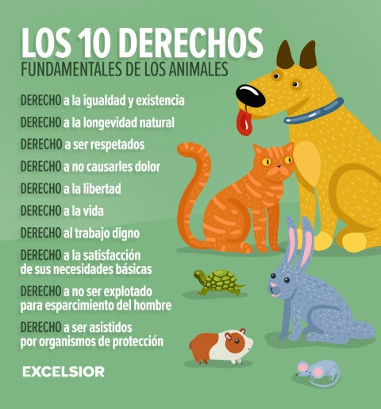
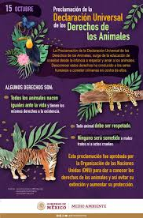

Navegación completa del sitio web
Utiliza estos enlaces para navegar directamente a las secciones principales:
LOS DERECHOS DE LOS ANIMALES
CENTRO DE ESTUDIOS TECNOLOGICOS INDUSTRIAL Y DE SERVICIOS NO.54 "GUADALUPE VICTORIA"
CONSTRUYE PAGINAS WEB
ANA MORENO
Hernandez Gomez Ashly Giovana
FECHA DE ENTREGA:21/01/2025
Nota: Al tocar la imagen saldra la informacion
¿Qué son los derechos de los animales?
Proteccion

Maltrato

Alimentaria

Declaracion
Concienciación de la sociedad

Historia

Contacto

Video sobre el dia internacional de los derechos de los animales
Formulario
Video sobre la ley de proteccion y derecho de los animales
Conclusion